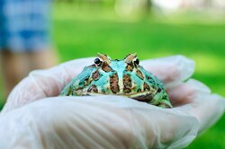
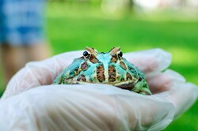

Dominique Kraft
Hello, I am Dominique Kraft, a student here at frog lovers university. I have been at frog lovers university (FLU) for four years now. This year is my final year here. I have been focusing my studies on frog diets with a minor in frog biology.
I have worked with one hundred frogs throughout my experience here at FLU. With a hands on experience I have been able to find out what a frog's most likable diet is. It has always been known that frogs love insects and foliage yet I brought new insight to what their favorite diet actually is. Frog's love Italian food and thrive on it. The dish frogs love the most is actually pizza. This has been a first discovery at FLU and all around the world.
My team and I have also been funded to study frog biology. What we have discovered is new information about their bodies. Frog's actually have a cuteness scale of one thousand. This has been a 100% increase since frogs have been discovered. What makes them cute is actually their little cute butts. Those butts have brought grown men to cry of cuteness. Making frogs one of the cutest and most internet friendly animals at the moment.
FLU has awarded me as valedictorian of the year 2023. I have three distinguished awards including: frog lover of the year award, frog scientist of the quarter, and distinguished rainfrog volunteer award. I have also been awarded two separate scholarships: frogs united and new discovery frog scholars. My ride here at FLU has been paid for by the amphibian fans across the world program, as I am one top leader.
As a student of FLU I have brought a skill set others do not have in the real world. I know frogs inside and out, giving me a head start on all frog activities and knowledge. I have skills in research, writing, photography, cuteness judgement, and amphibian interests. I would be an asset to any frog company if brought on to the team.
I am proficient in excel, Microsoft PowerPoint, google docs, and aws cloud 9. I am currently also taking digital marketing, business classes, and finance classes. I am slotted to graduate within the next three months with these skills. I have great skills in English comprehension, interpersonal communication, presentation, research and debate, charisma, and creativity skills.
I work well under pressure, maintaining focus on the task and a successful delivery. I understand how important it is to work as a team especially when researching and producing results. I can show great team membership as well as leadership depending on the situation of the task. I take pride in any assigned work and will always focus on doing a perfect job. I take directions easily and know when to escalate issues at work as well as using my own judgement in high pressure situations. I know how to listen, comprehend, and visualize during team meetings. I have a pride in standing for the companies I serve. I am an asset
Experience
Pizza Crafter
• Hand crafted beautiful and delicious pizzas
• Used topping combination expertise to make the best pizzas known to man
• Experience with the oven, the cutter, the box, and customers
Frog Research Specialist
• Conduct studies on frogs and their environment
• Study and care for rainfrogs and bullfrogs
Frog Lover
• Born a frog lover
• Advocate for frog rights as well as adorable meter
• Created educational content to help promote frogs of all species
• TA'd for over 400 frog lovers each academic quarter
Education
Frog Lovers University
Frog Lovers University
University of California Riverside
Portfolio


